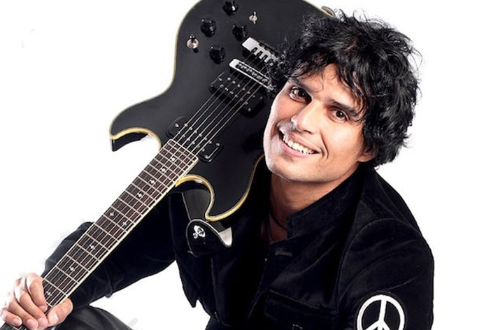

Una mirada a Pedro Suarez Vertiz
Es quizas el rockero peruano mas famoso, desde sus tiempos de Arena Hash y sus clasicos 'Cuando la cama me da vueltas' o
'Me resfrie en Brasil' hizo bailar a toda una generacion que sufria el terrorismo y los apagones.Arena Hash marco una era en el rock peruano junto a otros grupos de los 80s, como Rio, Dudo, etc.Pedro le dio su toque personal, unico que lo hizo ser el mejor.
Luego de la separacion del grupo, Pedro logro cimentar una espectacular carrera como solista dandonos exitos como 'Lo Olvide', 'No pense que era amor',
'Cuando pienses en volver' su exito dedicado a los inmigrantes del mundo, que hizo soltar mas de una lagrima a los peruanos alrededor del mundo.
Un desorden nervioso muscular, nos privo de seguir escuchandolo, pero su legado musical siempre estara en el corazon de todos aquellos que amamos su musica,
hoy ya retirado de los escenarios su musica sigue viva, y como dice el dicho, cada dia canta mejor.
Bohemian Rhapsody o el renacer de Queen
El exito de la pelicula Bohemian Rhapsody, ha sido espectacular, no solo ha hecho conocer a los mas jovenes la musica de una de los mejores grupos de rock de la historia, sino tambien ha logrado que la imagen de Freddie Mercury vuelva a estar presente. Rami Malek logra realizar una interpretacion magistral que lo llevo a ganar el Oscar a mejor actor, y junto a un extraordinario reparto logra hacernos viajar en el tiempo y vivir nuevamente como se conocieron, como alcanzaron la gloria, y como la vida alegre y desenfrenada hizo que adquiriera el SIDA que finalmente lo llevo a la muerte. Queen volvia a vivir, una extraordinaria puesta en escena nos lleva al mitico concierto benéfico Live Aid en el estadio Wembley de Londres,y logro lo impensado, hacernos sentir parte de ese concierto, sentir la musica vibrar en nuestra venas y vivir una experiencia inolvidable. Gracias Queen, gracias Freddie Mercury ....